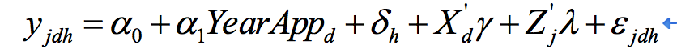
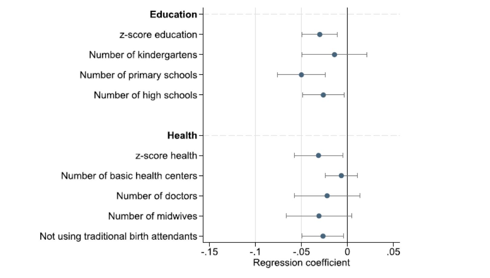
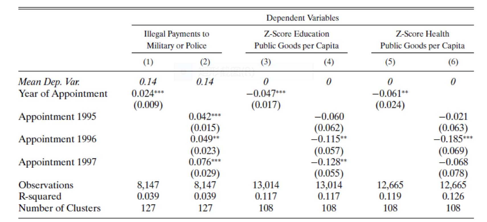
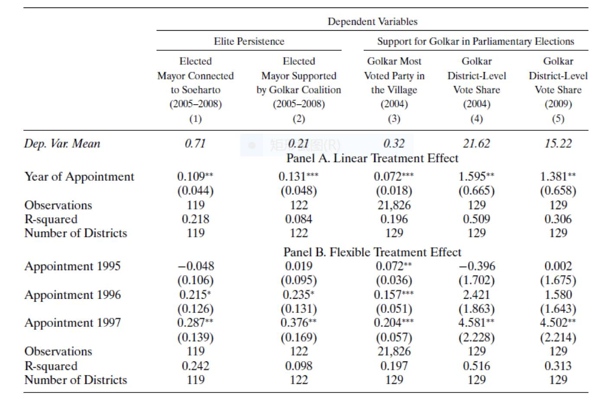

好精英与好民主，印尼的发展经验
收录于合集
#民主与民主化 34 个
#比较政治学 121 个
#国家建构与国家发展 70 个
文献来源：Monica Martinez-Bravo，Priya Mukherjee，Andreas Stegmann. " The Non- Democratic Roots of Elite Capture: Evidencefrom Soeharto Mayors in Indonesia", Econometrica, Vol. 85, No. 6 (November, 2017), pp.1991–2010
Monica Martinez-Bravo，货币与金融研究中心（CEMFI）副教授，Priya Mukherjee，威廉与玛丽学院助理教授，Andreas Stegmann，货币与金融研究中心博士生候选人。
时至今日，已有大量的研究探讨了民主化转型后“民主羸弱”的现象及其根源，其中有“殖民地传统根深蒂固”、“转型条件缺陷”、“政治参与过载”、“暴力运动迷恋”以及“外部环境阻遏”等解释。这些解释所关注的问题对象虽各有侧重，但无一不将精英对民主的操纵视为“民主羸弱”的突出表现。的确，在民主化转型后的国家中，几乎都面临精英与大众间的权力分享与约束制衡问题，而如果精英能够游离于民主的框架外，并且这种游离违背了民主的原则和精神时，就往往可能出现“精英俘获（elites captures）”的问题。对于成熟民主国家，精英俘获问题主要源于一种结构化的权力（类似于一种deep state），那么，对于刚刚转型后的新生民主国家，精英俘获问题主要便体现为旧体制精英从形式到实质上的权力保留问题。很多经验证实，在民主转型后，虽然旧体制的合法性在民主化面前不堪一击，但旧体制的竞争力在民主化后却往往依旧坚挺，最突出的表现就是旧体制的精英依旧在民主化转型后继续控制甚至执掌权力，并且极大地影响到国家的发展绩效。
那么，旧体制精英的这种俘获究竟会如何影响发展绩效呢？且这种影响机制是什么呢？在今年最新的Econometrica（85,6）上，Bravo等学者以印尼为例，集中探讨了这个问题。
苏哈托政权在1998年退出舞台后，他在各地的支持力量以及亲信组织并没有退出舞台，后者作为旧体制的精英，继续觊觎和把控着各地政府权力。1998年下半年民主化之后，旧体制中的“苏哈托官员”依旧充斥着各个部门、各个地方的要职要害中，其中既有军方、旧政府要员，也有商办、地方势力甚至黑社会等组织化集团的首脑和骨干。在印尼地方系统中，最关键的职务就是市长。民主体制建立后，新体制并没有拿下各个市的这些“苏哈托官员”，而是继续让其官存原职，并可以至少持续到1999年第一次全国地方选择（注：1999年地方选举为间接选举，2005年选举法改革后，改为直选，印尼地方政府选举为四年一次）。之所以如此，原因之一是旧体制精英掌控了大量的社会资源，因此，在下次选举前保留他们的职位，虽然可能意味着旧秩序的残余，但也意味着他们掌握的大量资源继续为国所用。这就在一定程度上说明，以新生民主体制的不纯粹性为代价换取当地发展投入的持续性，不一定是民主化运动疯狂过后的成本，也是理性博弈的选择。
作者发现，这些“苏哈托市长”不仅继续留职，甚至很多在1999年第一次地方选举时获得胜利，继续掌权。乃至于在其后2003年、2007年的地方大选中，依旧有一些苏哈托市长继续执掌权力。因此，作者提出三个假设。首先，对于这些苏哈托市长来说，相比苏哈托时期，民主转型后的执政思维必然有所变化，任命上台和选举上台后的表现也是有所不同，但是这种差异是否真正会带来当地治理绩效的差异呢？其次，这种影响效应是否会由于不同的执政时长的而有所差异呢？第三，在苏哈托市长结束任期后，当地以后的发展之路是否会与其他没有选出过苏哈托市长的地区有所差异呢（在控制变量的前提下）？
对于自变量，作者从世界银行、印尼政务平台等资源获得了凡是有过苏哈托市长的任职离职信息，并通过各种可信渠道获得了缺失的数据，由于民主运动发生在1998年，因此，1998年上台的市长中有一部分不是苏哈托市长，为了防止出现误差，作者只保留了1998年以前上台的市长的任职和离职信息作为样本，如此可以保证不会出现异方差问题。对于因变量，作者选用了大量反映治理绩效的指标来表示，其中包括人均公共物品支出（财政）、非法福利发放、腐败指数等等体现旧体制和新体制特点的指标。
最终，获得如下计量模型。

值得注意的是，作者选用了任命年来测算苏哈托市长的影响效应（treatment effect），即模型中的α1，之后的几个自变量分别反映了不同地区的固定效应和各种潜在哑变量，从而提升估测精度、降低方差游弋半径。
经过分析后，作者发现，在控制其他变量一致的前提下，有过苏哈托市长染指的地方，其治理绩效与发展水平相对较差，有过长期染指的地区，治理绩效和发展水平则相对更差，这点主要表现为人均公共物品支出的不足，如下图。

这潜在的说明，苏哈托市长并未有按照假想的那样，迫于民选压力而增大任职期间的民生支出和发展投入，相反，这些官员较为普遍的加大力度巩固自身的权力——尤其是结构性权力，绞尽脑汁的提升自身的非民主赋权能力，进而更加垄断当地的资源。这一点也是有所验证的，作者发现，在控制其他变量一致的前提下，有过苏哈托市长染指的地方，其关于警察、反暴反恐、信息侦查方面的财政支出都显著增加，这说明，苏哈托市长大多通过披上财政的外衣，来购买私人性的权力服务。如下图所示：

之后，作者进一步探讨，既然苏哈托市长的染指有损于当地的发展绩效，可是，按照一般理论，民主体制下，无能的政府一般会被民众通过选票赶下台，但为什么这些发展绩效较差的地方，市长还能“高枕无忧”呢？作者认为，精英俘获的作用不仅可以实现“利为官所食”，还能让民众自我俘获，这便出现一种较为普遍的现象，即精英的长期侵蚀，会极大地削弱民主制度的合法性，从而降低民众对民主的预期，最终带来民主参与的下降和政治冷漠，而这种效应进一步强化精英肆无忌惮的俘获行为，呈现一种无以复加的恶性循环。
作者检视了2003与2007年两次地方选举，结果证实了以上这个观点，有过苏哈托市长染指的地方，在两次大选中，支持执政党Golkar（苏哈托市长所在党）的比例都较高，真正能够通过民主体制将苏哈托市长“选下去”的地方还是很少。如下图所示。

当然，我们无法知晓这些“较高”的民意支持究竟是被迫还是主动，但联系当地较差的发展绩效来看，我们很难认为这种“较高”的民意支持是真正意义上的。
之后，作者进一步探讨了这种民主恶性结果的产生机制，作者认为，虽然激进的民主运动一直被人所诟病，在很多人看来，激进的转型很难保证高质量的结果，这点也成为很多人质疑民主转型可行性的理由之一，但是印尼的例证却说明，激进的民主转型或许有问题，但“洋洋务务”的转型同样会面临更严重的问题。因此，民主转型速度与治理绩效之间或许呈现一个倒U型曲线，过快和过慢的转型都可能带来较差的治理体验。
当然，作者认为，印尼案例虽然说明精英俘获可能会带来治理绩效的下滑，但不代表所有的下滑都主要由于精英俘获所致，毕竟有精英的地方就会有俘获，但一些国家较好的治理绩效也得益于高效的精英力量，所以在某种意义上，对于国家的治理发展而言，一个能够产生好精英的制度要比产生好民主的制度更重要，或至少同等重要。
关于印尼民主化的案例分析还可参见：民主转型中的政治竞争与族群骚乱：来自印度尼西亚的启示
政观编辑部